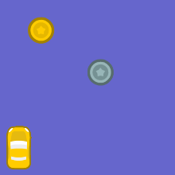

My Hobby
Reading
Reading is one of my hobbies. I like to read in the genres fantasy and adventure and I can be a bit selective with books. While reading, I get lost in the story and I start imagining what must've been happening in th story. One of my favourite books is the series of Harry Potter as it has both fantasy and adventure though it is a bit dark as well. In this book, my favourite character is Hermione Granger as she is clever, smart, brave, caring, and one of the best students at Hogwarts School For Witchcraft and Wizardry.
My Hobby
Music
Another one of my hobbies is music. I can play guitar, keyboard, harmonium and sing both indian classical and western vocals. I like all music genres but I prefer pop and dramatic songs.
My Hobby
Coding
Coding is another one of my hobbies. I like coding a lot and I get really excited when it's time to test the code I have done though I have to admit that at first I only started coding to be able to make a robot as it could be like a friend who stays with me at my home and does whatever I want it to but I soon got attached to coding and learning how to make apps, games, websites, chatbots, ect. Below there are some of the projects I have made.
